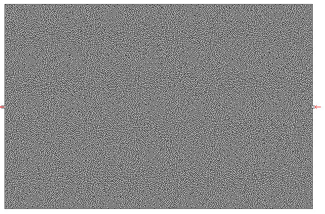
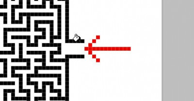
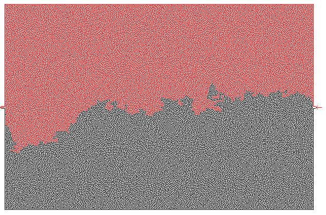

事先声明，这办法不是我想到的，在学校论坛看见的。
觉得很神奇，就试了一把，确实很快，轻松对付各种迷宫~
先看这个迷宫，是不是觉的很晕？
 http://www.yulei666.com/wp-content/uploads/2009/11/maze.jpg
其实解法很简单，用ps打开，找到入口，放大4倍，选个黑白以外的颜色(例如红色)，用油漆桶工具对着入口的一条黑边染色
 http://www.yulei666.com/wp-content/uploads/2009/11/maze2-400x209.jpg
然后整个迷宫都被分成了红黑两部分，沿着红黑两部分的边界走就ok了~
 http://www.yulei666.com/wp-content/uploads/2009/11/maze3.jpg
具体原理我也说不清楚，大致来说就是：
如果迷宫有唯一解，肯定可以被路径分成两部分，而每一部分的围墙肯定是相连的。
如果有多解，则迷宫的的围墙可以被分成N个相连的部分，分布染色，沿着边界也可以走出。